- Установка
- Создание профиля
- Подключение к сети
- Публикация записи в своём блоге
- Поиск записей
- Добавление друзей
- Взаимодействие с пользователями в локальной сети
Установка
Зайдите на сайт https://ahdinosaur.github.io/patchwork-downloader/ и скачайте версию для вашей операционной системы. Если на вашем компьютере Windows, то запустите файл, который вы скачали. В остальных случаях установите при помощи вашего пакетного менеджера.
Создание профиля
После запуска PatchWork сразу предлагает создать профиль, т.е. указать свой ник, написать пару строк о себе и добавить аватар. Всё это не обязательно и вы можете нажать "Cancel", чтобы указать ник после. Вы можете в любой момент изменить свой ник, отредактировать биографию или сменить аватар. Вся история редактирования этих данных навсегда останется в истории вашего профиля. Нажмите "Publish", чтобы сохранить.
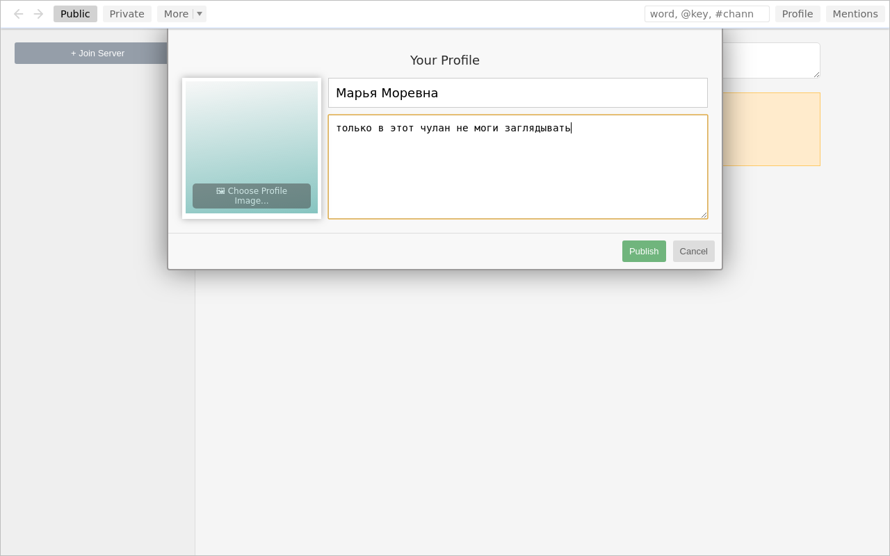Теперь в вашем новом блоге две записи: вы указали имя и написали немного о себе. Аватар добавим когда-нибудь потом.
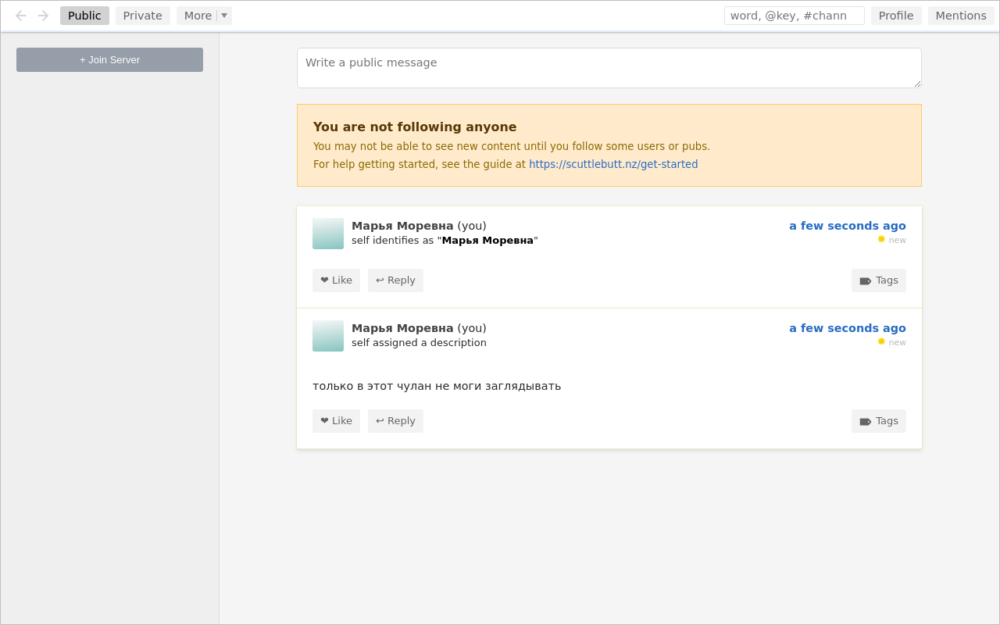Подключение к сети
Сейчас ваш блог хранится только на вашем компьютере и никому не виден. Чтобы он попал в сеть, нужно подружиться с Pub-сервером. Список этих серверов находится на странице https://github.com/ssbc/ssb-server/wiki/Pub-Servers. Выбирайте любой и скопируйте инвайт-код. Нажмите на кнопку "+ Join Server", вставьте инвайт-код и нажмите "Redeem Invite".
Если с одним Pub-сервером не получится, то возьмите код от другого и повторите.
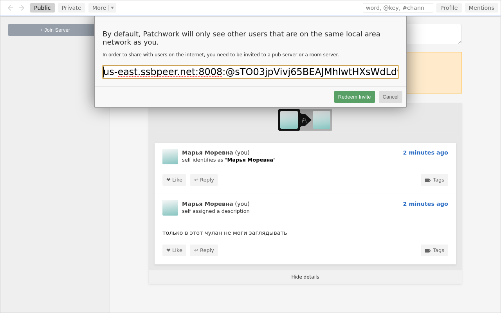Теперь вы с Pub-сервером взаимные друзья, и он хранит копию вашего блога, а вы - копию его блога и блогов всех его друзей. Его блог состоит из сообщений, что он добавил кого-то в друзья. Блоги его друзей вы не видите в ленте, но они доступны вам для поиска (см. ниже).
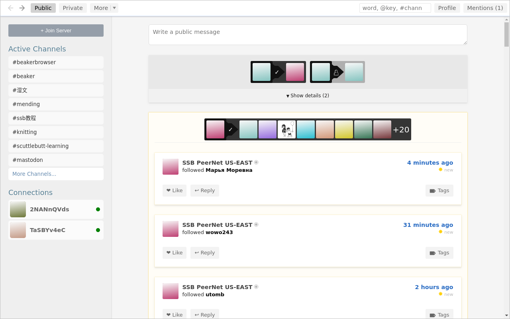Публикация записи в своём блоге
Чтобы написать сообщение в свой блог, введите текст в поле "Write a public message" и нажмите "Publish". Программа предупреждает вас о необратимости этого действия: после отправки пост нельзя ни отредактировать, ни удалить.
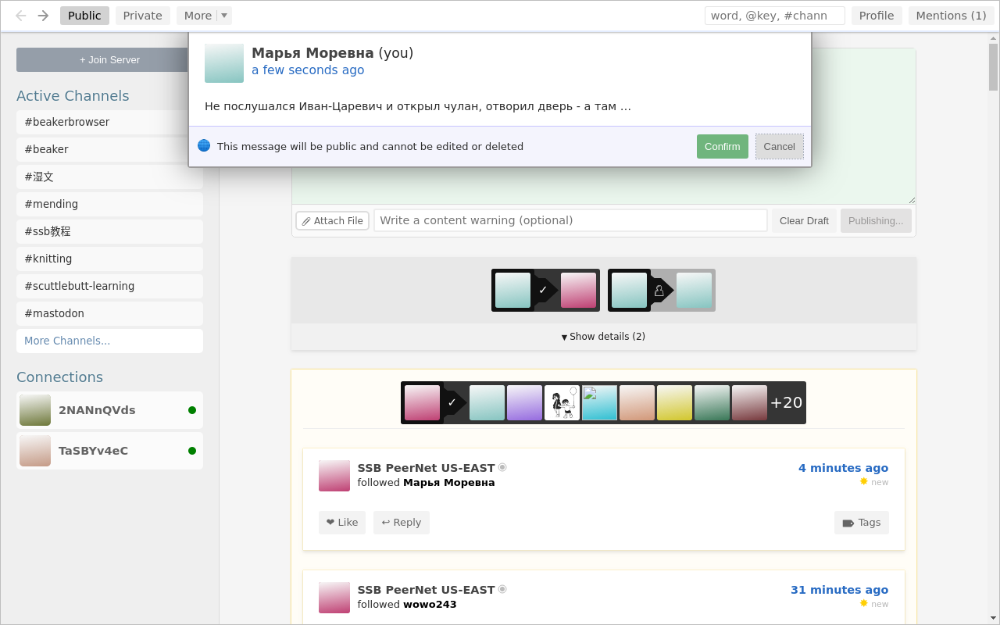После нажатия подтверждения "Confirm" новый пост появится вверху экрана.
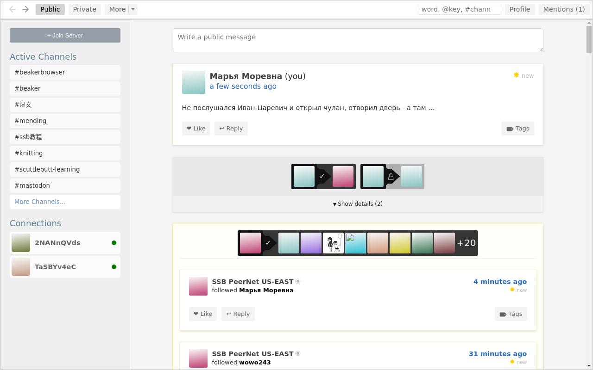Поиск записей
Поиск по тегам позволяет найти свои и чужие записи среди тех блогов, которые уже хранятся на вашем диске локально. В правом верхнем углу есть поле поиска. В него можно как ключевые слова, так и теги, которые начинаются с решётки. Тегом #new-people в SSB отмечаются приветственные сообщения недавно присоединившихся пользователей, адресованные другим участникам сети.
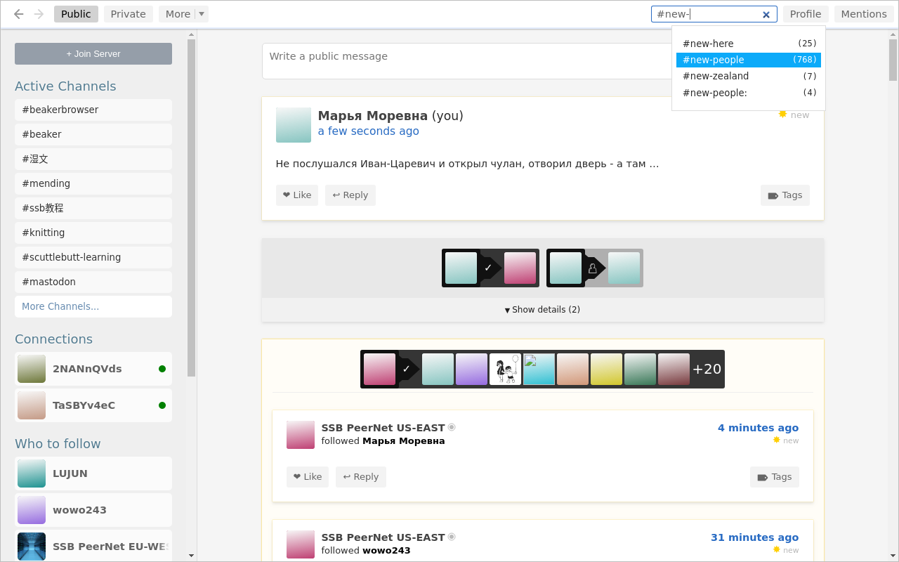Пользователь romeo представился, а пользователь dinoƧ𝔸Ⓤᖇ ему отвечает и говорит, что подписан на тег #new-people.
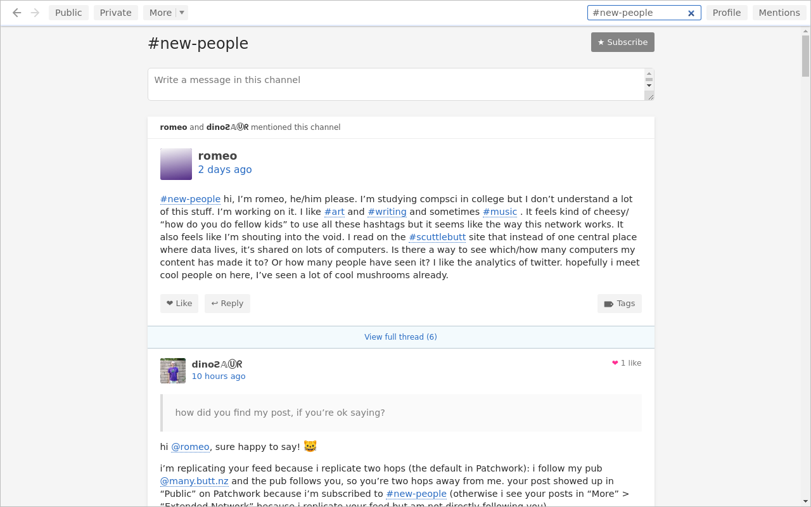Добавление друзей
Нажмите на имя пользователя, и вы попадёте на его страницу. На ней его имя, аватар, короткий текст о себе и все публичные записи, которые он написал или прокомментировал, упорядоченые от новых к старым.
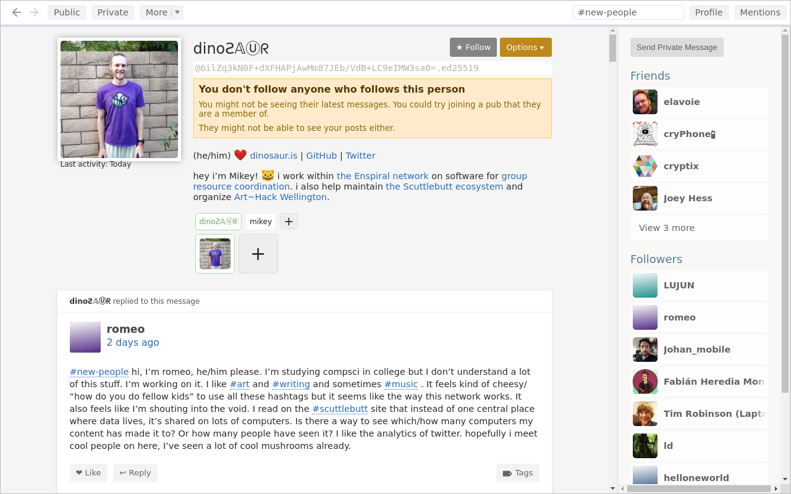Нажимите на кнопку "Follow", чтобы добавить его в друзья. Программа снова предупреждает вас о необратимости этого действия. На самом деле, вы можете удалить кого-то из списка друзей. При этом первоначальное добавление никуда не исчезнет, но появится ещё одна запись в вашем блоге, обозначающая удаление.

После добавления пользователя dinoƧ𝔸Ⓤᖇ в друзья программа начинает скачивать блоги его другей. Профилю пользователя dinoƧ𝔸Ⓤᖇ 5 лет, скачивание и индексация заняли около одного часа, в размер папки с данными вырос до 1.5Gb.
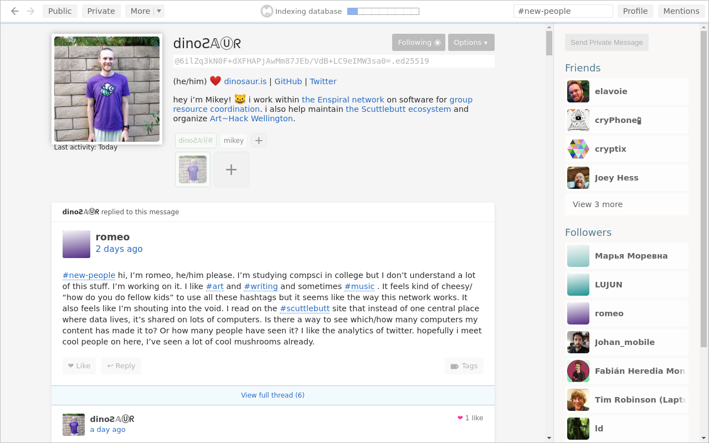Нажимая на имя пользователя romeo вы переходите в его профиль и видите, что его последнее сообщение было написано 8 часов назад.
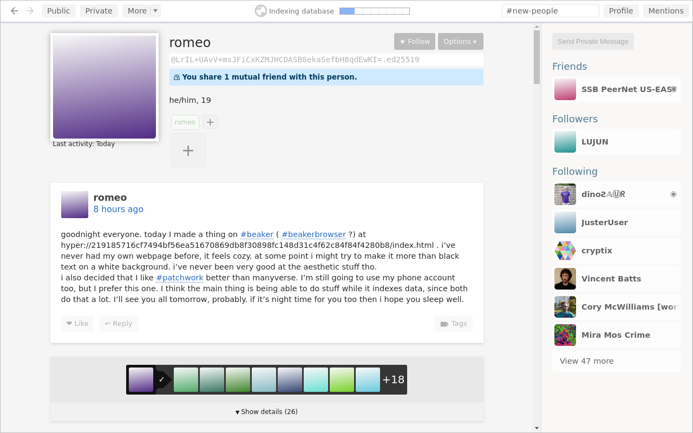Нажмите на кнопку "Public" в левом верхнем углу экрана, чтобы вернуться на стартовую страницу, где вы всегда найдёте ленту последних записей ваших друзей. В данный момент самые новые записи в ленте - ваши.
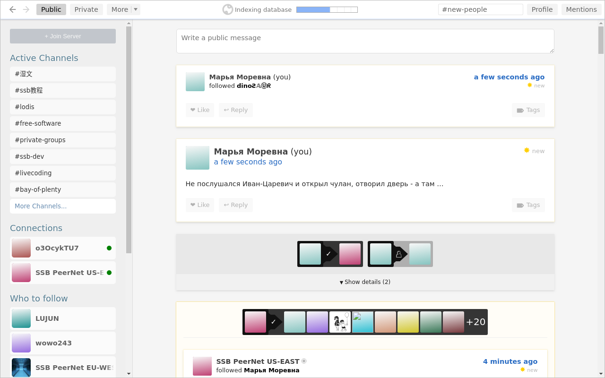Взаимодействие с пользователями в локальной сети
TBD